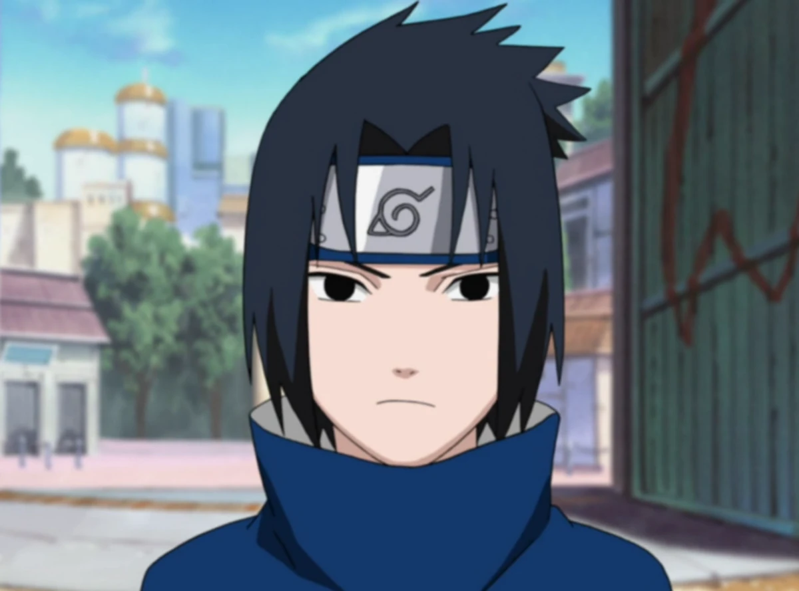

Members

Naruto
Naruto Uzumaki is a young boy from the Hidden Leaf Village and the biggest problem child at the ninja academy.

Sasuke
Sasuke Uchiha is one of the last surviving members of Konohagakure's Uchiha clan.
Sakura
Sakura Haruno is a kunoichi of Konohagakure. When assigned to Team 7, Sakura quickly finds herself ill-prepared for the duties of a shinobi.

Kakashi
Kakashi Hatake is one of Konoha's most talented ninja, regularly looked to for advice and leadership despite his personal dislike of responsibility.